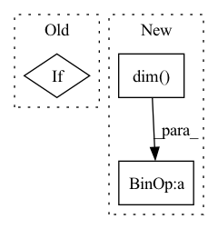

Pattern ID :3401
Before Change
def forward(self, x):
mean, var = self.running_mean, self.running_var
weight, bias = self.weight, self.bias
if x.dim() == 4:
mean, var = mean[:, None, None], var[:, None, None]
weight, bias = weight[:, None, None], bias[:, None, None]
return (x - mean) * torch.rsqrt(var + self.eps) * weight + bias
After Change
def forward(self, x):
if x.dim() != 4:
raise ValueError("expected 4D input (got %dD input)" % x.dim() )
mean, var = self.running_mean, self.running_var
weight, bias = self.weight, self.bias
In pattern: SUPERPATTERN
Frequency: 3
Non-data size: 3
Instances Fragment ID: 17489442
Project Name: jintao-huang/efficientdet_pytorch
Commit Name: f904ad7387726ecd2dac2c099e3f55a9d1a166ef
Time: 2020-06-09
Author: hjt_study@qq.com
File Name: models/utils.py
M Class Name: FrozenBatchNorm2d
N Class Name: FrozenBatchNorm2d
M Method Name: forward(2)
N Method Name: forward(2)
M Parent Class: nn.Module
N Parent Class: nn.Module
M File Name: models/utils.py
N File Name: models/utils.py
M Start Line: 73
M End Line: 76
N Start Line: 71
N End Line: 73
Before Change
if mean_dim is not None:
loss = loss.mean(dim=mean_dim, keepdim=True)
if len(dims) > 0:
loss = loss.squeeze(dim=dims)
if batch_mean:
loss = loss.mean(dim=0)After Change
loss = (input - target)**2
n_dims = loss.dim()
dims = (
n_dims + dim if dim < 0 else dim for dim in self.reduction_dims
)
dims = sorted(dims)[::-1]
Fragment ID: 17489443
Project Name: tky823/dnn-based_source_separation
Commit Name: 56dd2a05237a9793a9d2e83550883e8534ee1219
Time: 2021-10-22
Author: delta9guitar97@gmail.com
File Name: egs/wsj0-mix/danet/src/adhoc_criterion.py
M Class Name: SquaredError
N Class Name: SquaredError
M Method Name: forward(4)
N Method Name: forward(4)
M Parent Class: nn.Module
N Parent Class: nn.Module
M File Name: egs/wsj0-mix/danet/src/adhoc_criterion.py
N File Name: egs/wsj0-mix/danet/src/adhoc_criterion.py
M Start Line: 23
M End Line: 36
N Start Line: 23
N End Line: 40
Before Change
def forward(self, x):
mean, var = self.running_mean, self.running_var
weight, bias = self.weight, self.bias
if x.dim() == 4:
mean, var = mean[:, None, None], var[:, None, None]
weight, bias = weight[:, None, None], bias[:, None, None]
return (x - mean) * torch.rsqrt(var + self.eps) * weight + bias
After Change
def forward(self, x):
if x.dim() != 4:
raise ValueError("expected 4D input (got %dD input)" % x.dim() )
mean, var = self.running_mean, self.running_var
weight, bias = self.weight, self.bias
Fragment ID: 17489444
Project Name: jintao-huang/efficientdet_pytorch
Commit Name: 1bc8344a81cb3569922e4a181f552806b0b82dc8
Time: 2020-06-09
Author: hjt_study@qq.com
File Name: utils/detection/utils.py
M Class Name: FrozenBatchNorm2d
N Class Name: FrozenBatchNorm2d
M Method Name: forward(2)
N Method Name: forward(2)
M Parent Class: nn.Module
N Parent Class: nn.Module
M File Name: utils/detection/utils.py
N File Name: utils/detection/utils.py
M Start Line: 114
M End Line: 117
N Start Line: 112
N End Line: 114